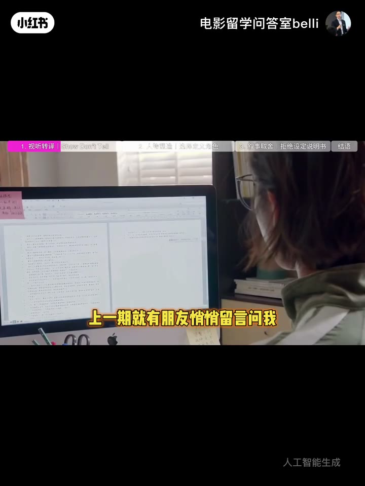
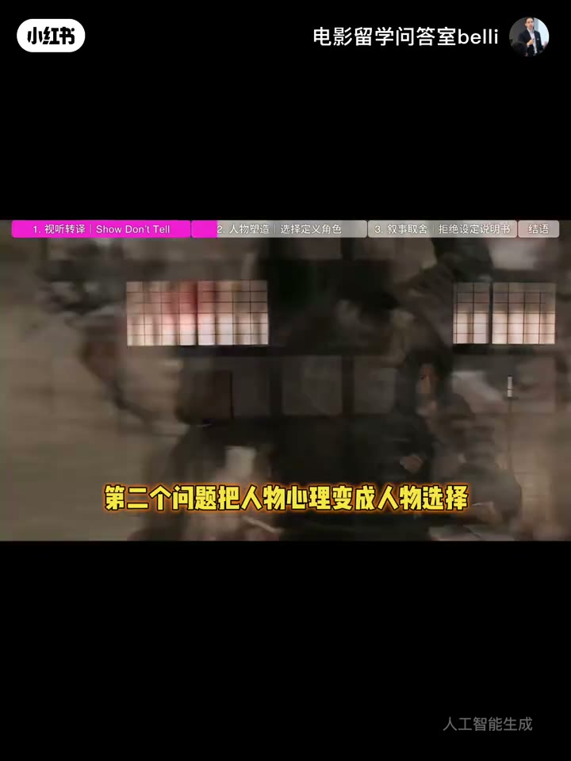
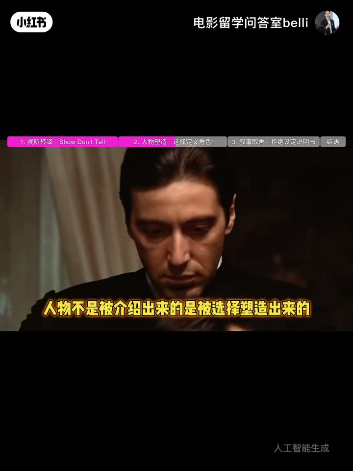
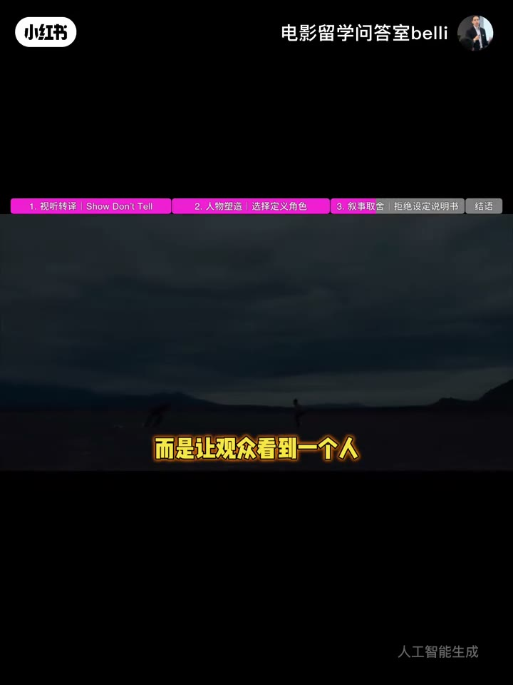
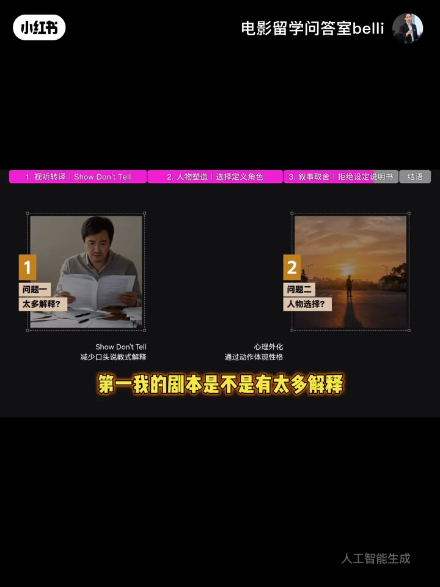
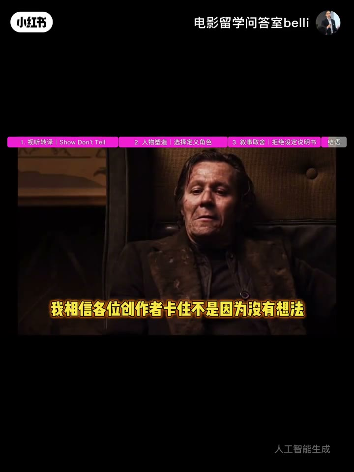

内容要点
剧本深度专题下集：小说人物进剧本变平的三法则——Show Don’t Tell、人物由选择塑造、把世界观说明书变成事件；并给出三问自检。
知识结构
好看故事≠好电影；改编后人物易扁。
观众能不能看到，而非写清楚没有。
压力抉择塑造人物，如教父路径。
说明书→行动；解释/选择/变化三问。
解释改成可见；背景改成无退路选择；设定改成场次变化。
00:00–00:50好看故事离好电影还差一步
下集聚焦职业编剧「分寸」：小说靠文字让人想象，电影靠画面让人感受。常见反馈是——小说人物很丰富，全篇进剧本后人物变平。往往不是不会讲故事，而是不知道电影表达有没有真正呈现。

00:50–01:30① Show Don’t Tell
别直接写给观众「他很挣扎、内心痛苦、经历过失败」。镜头是视听多感官：要转成视觉化表演或角色动作，让观众自己感到痛苦。检查法：不要问「写清楚了吗」，问「观众能不能看到」。
「展示而不是告诉——这是电影语言。」

01:30–02:30② 人物由选择塑造
大量童年/创伤/性格介绍立不住角色；真正塑造人物的是面对压力时的选择。《教父》里打动人的不是旁人告知「复杂」，而是一次次选择：从想逃离家族，到为保护家人走向曾抗拒的位置。人物不是被介绍出来的，是被选择塑造出来的。写人物时问：没退路时他会怎么选？

02:30–04:03③ 说明书→事件 + 三问
AI 生成本也常「背景大、设定全、看完没感觉」——电影不是让观众替你介绍世界，而是看世界变化后人物怎么办。末日故事别写资源越来越少，而让观众看见一个人为争一瓶水做出改变人生的选择。三问自检：解释是否过多？人物是否通过选择体现？每一场是否真正发生变化？答清才接近电影。



完整转录（100段）
Whisper medium · 中文 · 已做术语校正，仍可能有识别误差。
这一次我和大家分享高级
且值得品味消化的职业编剧技能
留意了别光听
一定要仔细的消化
高手的门道总在分寸之间
很多人以为写剧本很成功
但写一个好故事很难
真正进入电影
以后你会发现一个故事
很好看不代表它一定是一部好电影
因为小说靠文字让人想象
电影靠画面让人感受
今天和各位创作者编剧谈一谈
你的故事为什么总觉得
离完美电影还差一步
上一期就有朋友悄悄留言问我
老师我小说人物写得很丰富
但是全篇来看以后总觉得人物变平了
其实这个问题非常常见
因为很多创作者不是不会讲故事
而是不知道电影表达有没有呈现
这里大家记住
第一个最基本的电影编剧原则
Show Don't Tell
展示而不是告诉
很多创作者写剧本感受喜欢直接写给观众
他很挣扎他内心很痛苦
这个人经历过失败的人生
这些放在小说里没问题
但是电影不一样
镜头是视觉听觉多感官的呈现
所以编剧需要转换成视觉化的表演
或角色动作让观众在角色剧情中自己感受到
这个人很挣扎很痛苦
这就是电影语言
所以第一个检查方法
不要问我有没有写清楚
而问观众能不能看到
第二个问题把人物心理变成人物选择
很多人写人物会花大量篇幅介绍他的童年
他的创伤他的性格
但是电影里真正塑造人物的
是他面对压力时做出的选择
比如教父迈克尔这个角色真正打动人的地方
不是别人告诉我们他很复杂
而是我们看到他一次次面对选择
从想逃离家族
到为了保护家人一步步走
向自己曾经抗拒的位置
人物不是被介绍出来的
是被选择塑造出来的
所以写人物的时候
不要只问我的角色有什么背景
问当他没有退路的时候
他会怎么选择
任何一个人物在现实剧情中的选择行动都凸显
且侧面表达他是一个什么样的人
如果你觉得这个方法对写剧本有帮助
可以先点赞收藏一下
因为很多所谓人物写不活
不是人物设定不够多
而是人物没有真正行动
第三个问题
不要把剧本写成世界观说明书
这个问题现在很多AI
生成剧本也会出现背景很大
设定很多规则很完整
但是观众看完以后挺厉害
然后没感觉
为什么
因为电影不是让观众替你介绍世界
而是让观众看到这个世界发生变化
以后人物怎么办
比如末日故事不要写这个世界资源越来越少
而是让观众看到一个人
为了争夺一瓶水
做出了一个改变人生的选择
这才是电影
所以第三个检查方法
把说明变成事件
把设定变成人物行动
这也是为什么
现在AI时代生成一个故事设定越来越容易
但是电影创作真正困难的地方
依然是你能不能把一个想法转换成观众
真正能看到能感受到的东西
所以最后给大家三个检查问题
第一我的剧本是不是有太多解释
第二人物有没有通过选择体现自己
第三每一场戏有没有真正发生变化
如果这三个问题
能回答清楚你的剧本才开始接近电影
如果你正在写剧本
或者正在做AIGC短片创作
也可以把你的故事设定人物想要片段留言
我相信各位创作者卡住不是因为没有想法
而是不知道问题到底出在哪里
后续我也会针对大家的案例逐步拆解
你的开口与主动
也许造就的就是下一个爆款电影